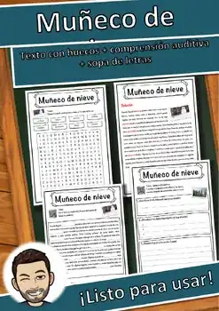
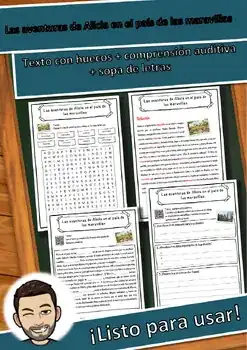
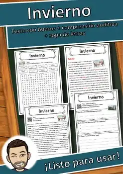
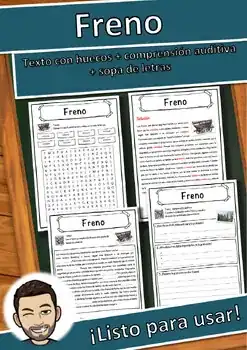
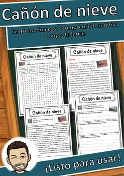
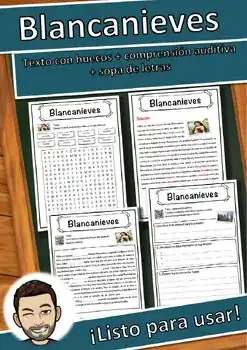

Navidad e invierno
Pan de jengibre, nieve, deportes de invierno, Navidad y Año Nuevo: recursos para la temporada fría.
34 recursos
Materia
Grado

«El laboratorio de pan de jengibre: Geometría entre moldes, medidas y casas» – Búsqueda del tesoro de lectura

«Luz y energía en invierno» – Búsqueda del tesoro de lectura

«Sal sobre el hielo» – Búsqueda del tesoro de lectura

Juego de roles multiplicación y división | Panadería de Navidad Grado 2

«Aventura de conteo con castañas» – Búsqueda del tesoro de lectura

«Animales en el bosque invernal» – Búsqueda del tesoro de lectura

«Aventuras en el mercado» – Búsqueda del tesoro de lectura

«La espera de Navidad» – Búsqueda del tesoro de lectura

«Alimentación de animales en invierno» – Búsqueda del tesoro de lectura

«Aventura en el gimnasio de escalada» – Búsqueda del tesoro de lectura

«Dentro de la pista de hielo» – Búsqueda del tesoro de lectura

«Aventura en la granja de calabazas» – Búsqueda del tesoro de lectura

«Deslizándose sobre el hielo» – Búsqueda del tesoro de lectura

«Rompiendo el hielo» – Búsqueda del tesoro de lectura

«De la granja a la Navidad» – Búsqueda del tesoro de lectura

«El misterio del hielo en el techo» – Búsqueda del tesoro de lectura

«Aventura en el sótano de manzanas» – Búsqueda del tesoro de lectura

«El laboratorio de la nieve» – Búsqueda del tesoro de lectura

«Cómo pasan el invierno los animales» – Búsqueda del tesoro de lectura

«Por qué los abetos conservan sus agujas» – Búsqueda del tesoro de lectura

«Huellas de animales en la nieve» – Búsqueda del tesoro de lectura

Pan de jengibre – Ficha de lectura: texto con huecos, comprensión auditiva y sopa de letras

Año Nuevo – Ficha de lectura: texto con huecos, comprensión auditiva y sopa de letras

Winterthur – Ficha de lectura: texto con huecos, comprensión auditiva y sopa de letras

Muñeco de nieve – Ficha de lectura: texto con huecos, comprensión auditiva y sopa de letras

Navidad – Ficha de lectura: texto con huecos, comprensión auditiva y sopa de letras

Las aventuras de Alicia en el país de las maravillas – Ficha de lectura: texto con huecos, comprensión auditiva y sopa de letras

Invierno – Ficha de lectura: texto con huecos, comprensión auditiva y sopa de letras

Freno – Ficha de lectura: texto con huecos, comprensión auditiva y sopa de letras

Deporte de invierno – Ficha de lectura: texto con huecos, comprensión auditiva y sopa de letras

Cañón de nieve – Ficha de lectura: texto con huecos, comprensión auditiva y sopa de letras

Blancanieves – Ficha de lectura: texto con huecos, comprensión auditiva y sopa de letras
Hockey sobre hielo
Hockey sobre hielo – Ficha de lectura: texto con huecos, comprensión auditiva y sopa de letras
Hielo
Hielo – Ficha de lectura: texto con huecos, comprensión auditiva y sopa de letras
No se encontraron recursos. Prueba con otra palabra o con otro filtro.